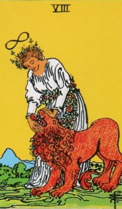
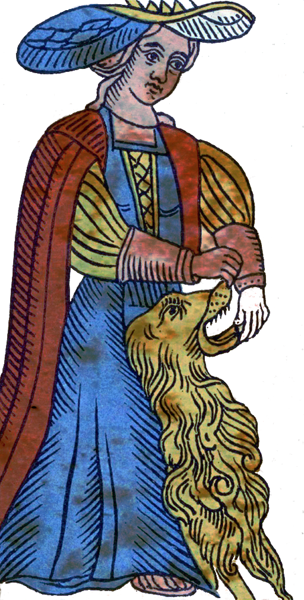
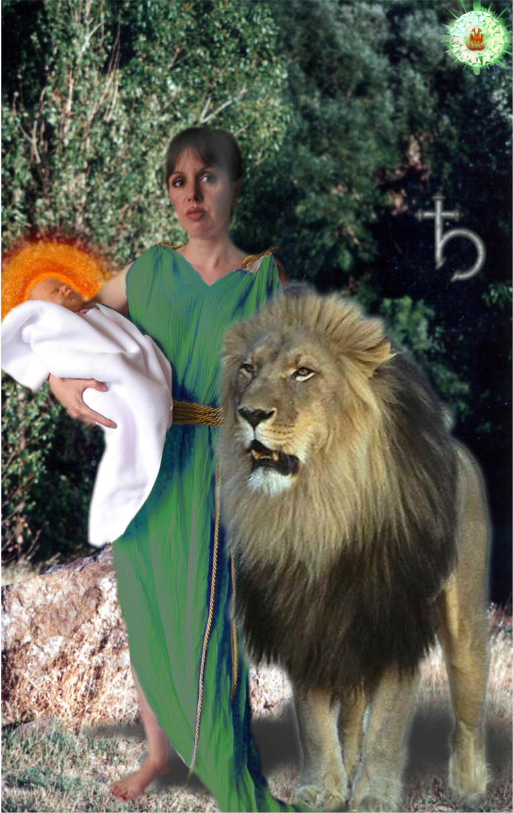
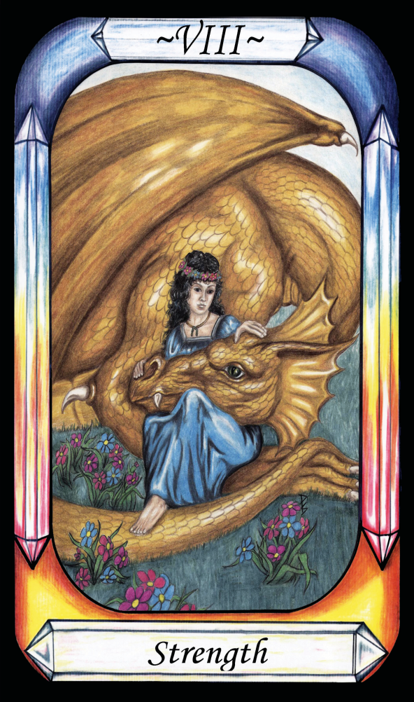

Strength




Representation |
Nature in Goddess form |
Meaning |
Ops, Rhea, Nature, wife of Saturn, who deceived her husband in order to save her son Jupiter. Aka the Great Mother. |
Opposite card |
The Hermit |
Function |
Exorcises Saturn (Identifies Great Mother) |
Strength, or Fortitude or Force (As in Force of Nature) is Ops, wife of Saturn, Mother of Jupiter, who betrayed her husband to save her child Jupiter, by switching the child for a rock. Her symbol is always the lion, indicator of her royalty.
[P67] To Saturn, subtle falsehood. [Strength, Ops] (Binah)
Ops is a nature goddess, and so we also see a connection to:
[P12] … Nature received the Word and copied the Archetypal world, becoming her own cosmos, by use of her own elements and the births of souls.
Also
[P16] Reason (the Word, the Logos) was withheld from Nature, and so she brought forth reason-less lives from matter: Air brought forth winged creatures. Water brought forth creatures that swim.
[P17] Earth and Water drew apart. Nature produced four-footed animals and reptiles of various natures.
RWS Imagery
A woman controls the head of a lion, apparently closing the jaws, or possibly opening them. She is garbed in white with many flowers, and a crown of flowers. Above the flowers is the cosmic lemniscate. The lion appears quite complacent – not struggling.
In the Waite Deck, her tiara crown also indicates her status as a Goddess, and links her with the Magician. The Magician is the Demiurge, creator of the material plane. Nature is the mother of all living in that plane, excepting that mankind is of both worlds, having an immortal soul and a mind, in a natural, mortal body.